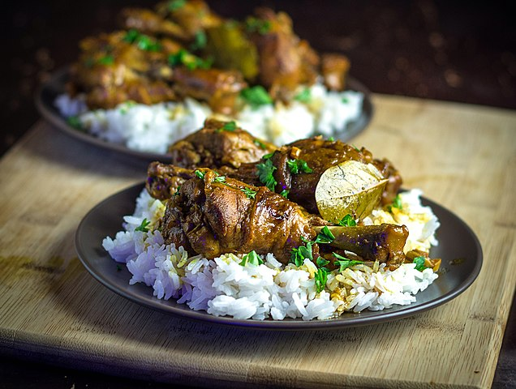

Chicken Adobo

Description
Adobo is considered as the "National Dish" in Philippine cuisine.
The main ingredients of Philippine adobo are
ingredients native to Southeast Asia, namely vinegar, soy sauce or patis (fish sauce), black peppercorns, and
bay leaves.
Ingredients
- 2 1/2 lbs. chicken cut into serving pieces
- 1 piece Knorr Chicken cube
- 2 cups lemon lime soda
- 1/4 cup soy sauce
- 1/2 cup white vinegar
- 5 pieces dried bay leaves
- 1 head garlic
- 2 teaspoons whole peppercorn
- 3 tablespoons cooking oil
US Customary - Metric
Steps
- Combine chicken, soy sauce, and 1 cup lemon lime soda. Mix. Marinate for at least 30 minutes.
- Heat oil in a pan. Pan-fry marinated chicken for 1 minute per side. Remove from the pan. Set aside.
- Using the remaining oil, sauté garlic until it browns. Put the pan-fried chicken back into the pan.
Add
remaining marinade, lemon lime soda, whole peppercorn, and dried bay leaves. Let boil.
- Pour-in vinegar. Let the mixture boil. Stir.
- Add Knorr Chicken Cube. Cover and reduce heat between low to medium. Cook for 20 minutes.
- Remove the cover of the pan. Adjust heat to medium. Continue cooking while stirring every few minutes until
the sauce evaporates
- Transfer to a serving plate. Serve. Share and enjoy!
Nutrition
Calories: 178kcal | Carbohydrates: 18g | Protein: 3g | Fat: 11g | Saturated Fat: 1g | Cholesterol: 1mg | Sodium:
1063mg | Potassium: 88mg | Fiber: 1g | Sugar: 13g | Vitamin A: 77IU | Vitamin C: 3mg | Calcium: 36mg | Iron: 1mg